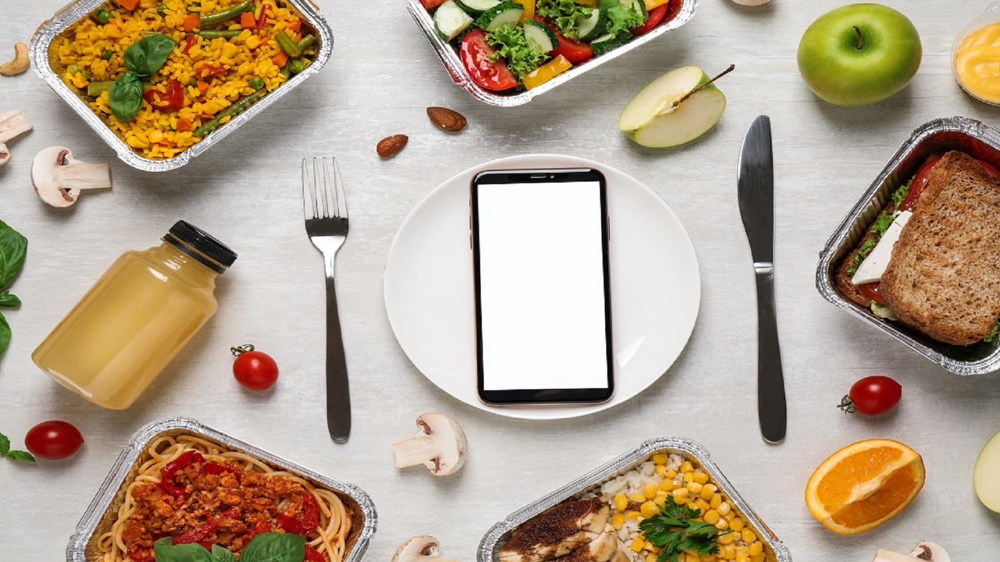

This unique energy project aims to analyse the energy consumption patterns of customers of Enel Energy, a company
committed to delivering reliable and sustainable energy solutions through innovation and effiiency.
The findings and recommendations from the analysis helped Enel Energy achieve its purpose while expanding its customer base by 25%.
This analysis was performed using PowerBi.
This client healthcare company faces challenges in managing patient flow, appointment scheduling and resource allocation, which results in increased wait
times and reduced the operational efficiency of the company. After this analysis, it was discovered that for the company to enhance operational efficiency
and improve patient satisfaction, it must allocate resources based on patient demand across various departments in the hospital.

XpressTech is a tech start-up business in Lagos. The business has partnered with food businesses for food deliveries and is now
working on launching its own platform,Xshop, by partnering with restaurants to deliver food to users on their platform.
Thus, there is a need for XpressTech to understand customers preference pattern with regards to meal preference, time preference
and medium preference in order to deliver exceptional services to its users. The findings of the analysis showed that
most customers prefer to order lunch meals, which are mostly snacks, via the food delivery app. At the end of the analysis, we recommended the best approach, which helped Xshop,
record massive patronization from the populace.

This prominent retail player, which specializes in product like electronics, beauty and fashion aims to optimize inventory levels to minimize carrying costs,
and implement strategies to ensure products availablity and avoid stockouts at the store. The result of the findings showed that organization's inventory level across all product categories
are significantly higher than the quantities sold. We recommended a number of actionable strategies to overcome this challenge while emphasising the importance of continuous monitoring and adjustment of these strategies.
This project analysed the frequency and quantity of donation received for an Educational FundRaising initiative. The analysis suggested approaches to
increase number of donors, value of donation, as well as frequency of donations.